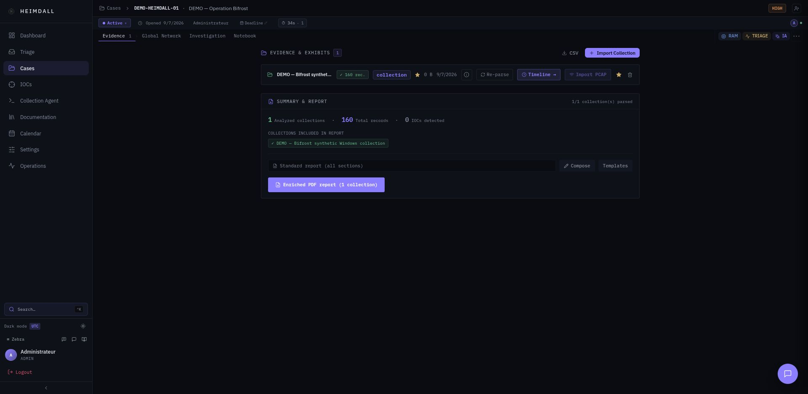
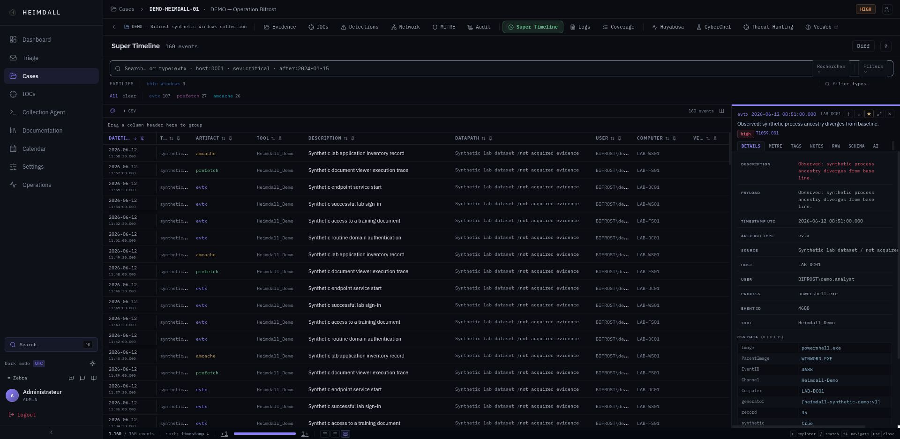
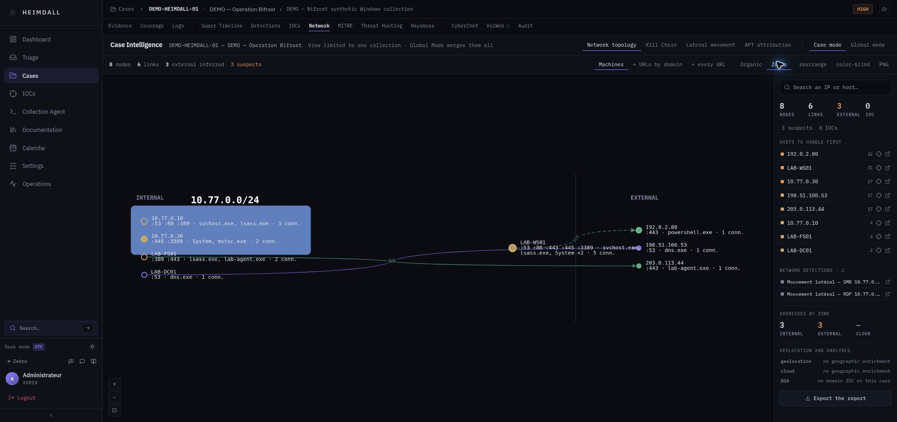
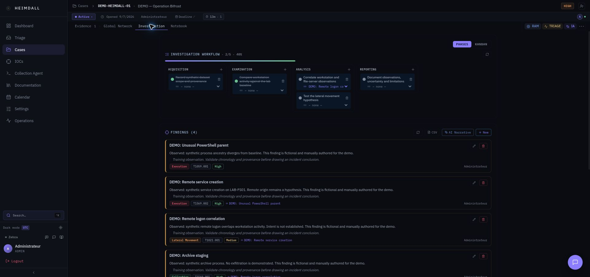

Digital forensics & incident response
HEIMDALLDFIR
See the invisible.
Hunt the unknown.
Evidence rarely tells its story in one place. Heimdall brings collections, timelines, threat hunting and analyst findings into a shared investigation workspace.
Inside the application
Follow Operation Bifrost.
A synthetic case created in Heimdall itself. These are captures of the real application, in English, from evidence review to investigation findings.

A case gives the evidence its context.
Start with the collection and its sources. Evidence, notes and analysis stay attached to the investigation they belong to.

Reconstruct the sequence, event by event.
Move through timestamped artifacts, inspect their fields and keep the evidence behind a finding close at hand.

Follow the relationships between hosts.
Review network observations alongside the timeline. Connections support an investigation; they do not, by themselves, prove an attack path.

Turn observations into a reviewable account.
Organise the investigation, record what the evidence supports and keep open questions visible for the next analyst.
Operation Bifrost is a fictional dataset created for this presentation. No customer evidence is shown. Captured on 7–8 September 2026 with the English locale; a few application labels are not yet translated. The website displays screenshots; it does not connect to an investigation backend.
The tools change.
The case stays together.
Heimdall connects the work that often happens across separate windows: importing a collection, reading artifacts, hunting for indicators and documenting a finding.
Designed for labs, incident responders and forensic teams. Heimdall analyses collected evidence; it is not a replacement for an endpoint collection platform or a validated forensic procedure.
Bring in the evidence
Work with Windows collections, CatScale Linux data, CSV imports, memory images and PCAP-derived connections. Keep the original context available throughout the case.
Find what deserves a closer look
Use the Super Timeline, YARA and Sigma hunting, network views and memory analysis to investigate the available traces. An optional Ollama assistant can help with case context.
Explain what happened
Collect supporting events, maintain investigation notes and prepare a report. The analyst reviews the result and remains responsible for the conclusion.
Built with established forensic tools
EZToolsHayabusaVolatility 3YARASigmaYour infrastructure.
Your investigation.
The application runs as a Docker Compose stack. Case data stays on infrastructure you manage; optional enrichment providers are configured separately.
- Docker Engine 24+ and Docker Compose v2
- 16 GB RAM minimum for the complete stack
- 50 GB free storage as a lab starting point, plus your evidence
git clone https://github.com/RaiseiX/Heimdall-DFIR.git
cd Heimdall-DFIR
bash start.shRequires openssl. On Windows, use .\start.ps1 in PowerShell. Open https://localhost after startup; a local setup uses a self-signed certificate.
Change the initial application passwords before exposing the instance. Start with test evidence: Heimdall is in beta. Memory analysis and local AI may require additional resources.
Built since August 2024.
Still being refined.
Heimdall is an independent, open-source project. The next phase focuses on making the investigation workflow more reliable, from the first installation to evidence recovery and review.
The project begins
The start of Heimdall's development: bringing forensic analysis and investigation context into one workspace.
First documented release
The changelog records the initial internal release, with cases, evidence, timelines, hunting and network workflows.
Current focus
Reliability before breadth
Reproducible installation, traceable ingestion, case access controls, audit integrity and restoration checks. Broader integrations and detection quality follow.
Try a case. Bring your perspective.
Practical feedback, reproducible bug reports and contributions help shape the next version of Heimdall.